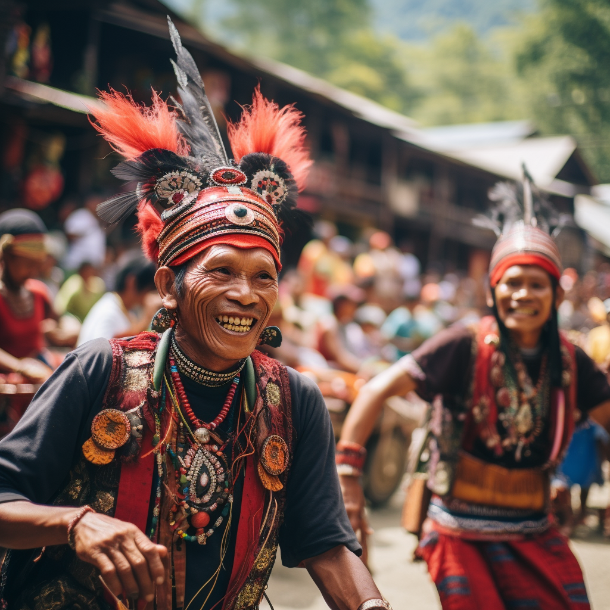

Prismatic Festivities of Tana Toraja
Witness the vibrant celebrations of Tana Toraja, where locals come together to honor their ancestors and celebrate life through colorful traditional festivals. Adorned in intricate woven textiles and adorned with ornate jewelry, the Torajan people participate in elaborate ceremonies, such as the grand funeral rites, which span several days and feature buffalo sacrifices. The blend of intricate rituals, dynamic music, and the warmth of community spirit make these festivities a captivating representation of Indonesia's rich cultural tapestry.